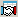

меню Создать окно / Сделки или кнопка 
Реестр сделок, совершенных в отношении счетов клиента. По умолчанию пороговое значение равно «100000». Каждой сделке соответствует отдельная строка таблицы.
К таблице может быть применен Режим связанных окон. В столбцах таблицы отображаются следующие параметры:
Комиссия Технического центра с точностью валюты цены инструмента. Параметр сделок на Московской Бирже Комиссия брокера с точностью валюты цены инструментаНазначение
Формат таблицы
Параметр
Значение
* Номер
Регистрационный номер сделки в торговой системе
биржи
Код биржи
Идентификатор биржи
Дата торгов
Дата текущей торговой сессии
**** Дата сделки
Дата регистрации сделки
**** Дата расчетов
Дата расчетов по сделке
*, **** Время
Время регистрации сделки в торговой
системе с точностью до секунды. Формат определяется настройками операционной системы
Выставлена (мкс)
Количество микросекунд во времени регистрации сделки
* Период
Период торговой сессии. Возможные значения:
*Заявка
Номер заявки, на основании которой заключена сделка
Инструмент сокр.
Сокращенное наименование инструмента
*
Инструмент
Наименование инструмента
Код инструмента
Идентификатор инструмента в торговой системе
ISIN
Код по классификации ISIN, присвоенный инструменту
Класс
Наименование класса, к которому относится инструмент
Код класса
Код класса в торговой системе
Тип сделки
Признак маржинальной сделки. Если результат сделки
изменяет значение текущего лимита клиента, то указывается тип сделки
«маржинальная», иначе поле пустое.
* Операция
Направление операции:
* Счет
Код торгового счета, в отношении которого заключена
сделка
* Цена
Цена сделки, за единицу инструмента
* Кол-во
Количество инструментов с точностью количества инструмента или в лотах
* Объем
Объем сделки в денежном выражении с
точностью валюты цены инструмента
Валюта
Валюта цены, например «SUR» - российский рубль
Валюта расчетов
Валюта расчетов сделки на Московской Бирже
Код расчетов
Код проведения расчетов по сделкам в РПС (Режиме
переговорных сделок)
Доходность
Доходность в %, рассчитанная по цене сделки
НКД
Накопленный купонный
доход, рассчитанный для количества инструментов в сделке, в
денежном выражении с точностью валюты цены инструмента
Трейдер
Идентификатор трейдера, совершившего сделку
Идентификатор рабочей станции
Идентификатор
рабочей станции
Дилер
Идентификатор фирмы, от имени которой совершена
сделка
Орг-я трейдера
Идентификатор фирмы трейдера
Код клиента
Код клиента, по которому установлен лимит средств
UID
Код пользователя на сервере QUIK
* Комментарий
Дополнительная справочная информация (заполняется
трейдером) – как правило:
<код клиента>/<номер
поручения>
Партнер
Идентификатор трейдера, с кем заключена сделка (только для
РПС)
Орг-я партнера
Идентификатор фирмы, с которой заключена сделка (только
для РПС). Поле заполняется только для клиентов с правами на совершение активных операций
Цена выкупа
Цена выкупа второй части РЕПО, в
денежном выражении.
Для сделок по SWAP-инструментам –
базовый курс валютного инструмента, указанный пользователем при подаче транзакции
Ставка РЕПО (%)
Процентная ставка кредитования при сделках РЕПО, в %
годовых
Комиссия ТС
Комиссия торговой системы, взимаемая
по сделке, с точностью валюты цены инструмента. Для сделок на
Московской Бирже:
«Комиссия ТС»= «Клиринговая комиссия»+«ФБ
комиссия»+«ТЦ комиссия»
Клиринговая комиссия
Комиссия за клиринговые услуги с
точностью валюты цены инструмента. Параметр сделок на Московской
Бирже
ФБ комиссия
Комиссия Фондовой биржи с точностью
валюты цены инструмента. Параметр сделок на Московской Бирже
ТЦ комиссия
Комиссия брокера
** НКД на дату выкупа
Накопленный купонный доход по сделке
на дату выкупа, в ден.выражении с точностью валюты цены инструмента
** Сумма РЕПО
Сумма РЕПО - сумма
привлеченных/предоставленных по сделке РЕПО денежных средств, по состоянию
на текущую дату с точностью валюты цены инструмента
** Объем выкупа РЕПО
Объем сделки выкупа РЕПО, в
ден.выражении с точностью валюты цены инструмента
** Срок РЕПО
Срок РЕПО в календарных днях
** Начальный
Начальный дисконт, в %
** Нижний
Нижнее предельное значение дисконта, в %
** Верхний
Верхнее предельное значение дисконта, в %
** Блокировка обеспечения
Признак блокировки финансового инструмента на специальном
счете на время операции РЕПО (Да/Нет)
*** Вид сделки
Вид сделки.
Возможные значения для сделок на Московской Бирже:
Возможные значения для сделок на бирже LSE:
Возможные значения для других бирж:
Идентификатор счета
Идентификатор счета в НКЦ (расчетный код)
Исходный номер
Номер витринной сделки в ТС. Параметр
сделок РЕПО с ЦК и SWAP
Айсберг-заявка
Признак
совершения данной сделки айсберг-заявкой. Возможные значения:
Фирма клиринга
Идентификатор фирмы - участника клиринга
Счет клиринга
Идентификатор клирингового расчетного счета в НКЦ
ID транзакции
Значение уникального номера заявки TRANS_ID, породившей сделку
UID отказавшегося от сделки
Код на сервере QUIK пользователя, отказавшегося от сделки
Дата снятия
Дата отказа от сделки
Снята(время)
Время отказа от сделки. Формат определяется настройками операционной системы
Снята(мкс)
Количество микросекунд во времени отказа от сделки
Системная ссылка
Дополнительная информация по сделке, передаваемая торговой системой
Состояние
Статус сделки. Возможные значения:
Приоритетное обеспечение
Приоритетный инструмент, принимаемый в обеспечение
Кол-во базовой валюты
Количество базовой валюты в валютной паре (например, для пары USDRUB это USD) с точностью количества инструмента. Параметр заполняется только для класса «Валюта» и отображается:
Базовая валюта
Базовая валюта в валютной паре (например, для пары USDRUB это USD). Параметр заполняется только для класса «Валюта»
Кол-во котируемой валюты
Количество котируемой валюты в
валютной паре (например, для пары USDRUB это RUB) с точностью количества инструмента. Параметр заполняется только для класса «Валюта» и отображается:
Котируемая валюта
Котируемая валюта в валютной паре (например, для пары USDRUB это RUB). Параметр заполняется только для класса «Валюта»
Биржевой номер заявки
Биржевой номер заявки, по которой исполнилась сделка
Площадка исполнения
Идентификатор биржевой площадки, на которой зарегистрирована сделка
Индикатор ликвидности
Индикатор ликвидности сделки. Возможные значения:
On Behalf Of UID
UID пользователя, от имени которого совершена сделка
Client qualifier
Квалификатор клиента, от имени которого совершена сделка. Возможные значения:
Client short code
Краткий идентификатор клиента, от имени которого совершена сделка
Investment decision maker qualifier
Квалификатор принявшего решение о совершении сделки. Возможные значения:
Investment decision maker short code
Краткий идентификатор принявшего решение о совершении сделки
Executing trader qualifier
Квалификатор трейдера, исполнившего заявку, по которой совершена сделка. Возможные значения:
Executing trader short code
Краткий идентификатор трейдера, исполнившего заявку, по которой совершена сделка
Side qualifier
Результат операции сделки. Возможные значения:
Capacity
Роль в исполнении заявки. Возможные значения:
Кросс-курс
Кросс-курс валюты цены сделки к валюте расчетов по сделке
* - параметры, выбранные по умолчанию
** - параметры сделок РЕПО
*** - при получении терминалом неизвестного ему вида сделки, в данное поле выводится запись «Вид сделки XXX»
**** - при включенной настройке «Показывать дату и время торговых данных с учетом локальной временной зоны» значение отображается с учетом временной зоны компьютера, на котором запущен терминал QUIK
Данные из таблицы доступны для копирования, вывода через DDE-сервер и экспорта по ODBC.
Функции, доступные для данной таблицы, могут быть вызваны из пункта меню Действия или контекстного меню таблицы.
Дополнительно:
См. также: